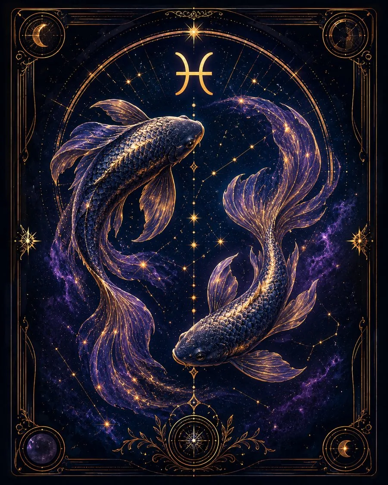

В двух словах
«Я чувствую, что всё связано».
Какой это человек
Рыбы очень восприимчивы к атмосфере, настроению и состоянию других людей. У них богатое воображение, сильная интуиция и способность понимать то, что трудно объяснить логически. Им свойственны сострадание, фантазия, художественное восприятие мира и склонность видеть за отдельными событиями общую картину.
Что им движет
Поиск смысла за пределами рационального объяснения и стремление чувствовать связь с людьми и миром.
Сильные стороны
Эмпатия, воображение, интуиция, творчество, сострадание, способность чувствовать других людей.
Слабые стороны
Размытые границы, нерешительность, уход от неприятной реальности, чрезмерная жертвенность.
В отношениях
Могут очень тонко чувствовать партнёра, но важно не путать любовь со спасательством и не жить только чужими эмоциями.
В работе и деньгах
Хороши в сферах, где нужны творчество, фантазия, интуиция, сочувствие и работа с образами.
Когда всё плохо
Вместо решения проблемы пытаются её не замечать или уходят в фантазии.
Главное внутреннее противоречие
Умеют растворяться в чувствах, людях и идеях, но их задача — не потерять при этом самих себя.
Это обобщённое описание солнечного знака, а не полный портрет человека. В реальной натальной карте характер зависит не только от Солнца, но и от других факторов.